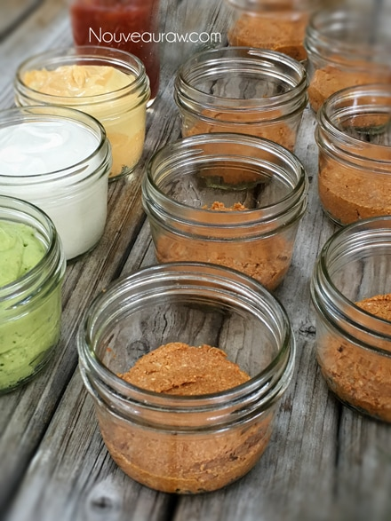
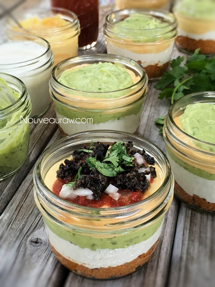
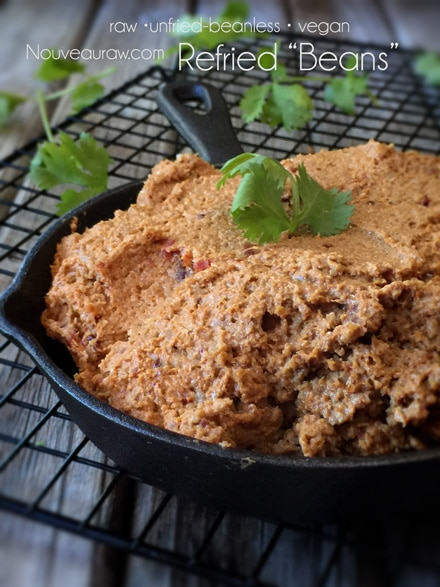
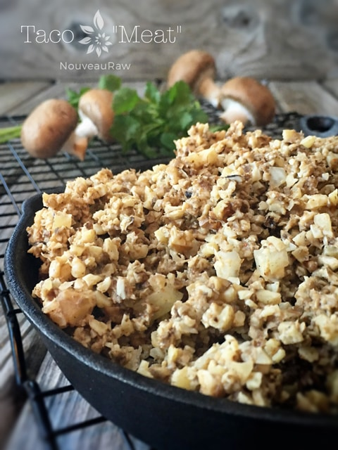

Five Layer Mexican Fiesta Dip

~ raw, vegan, gluten-free, nut-free ~
Here we go… a Mexican fiesta right before your very eyes! I had way too much fun creating this little cups of joy. I presented these to a wide range of taste testers, and they were a 100% hit. No one could get over the fact that I didn’t use dairy or beans. The look on their faces when I told them that the “refried beans” were made from sunflower seeds, was priceless.
I used single small serving sized jars, but you could prepare this in a large baking pan as well. I can tell you though; I will always make them in single servings… everyone enjoyed walking around with them, everything portioned out, no messy plates… just downright fun.
What Bob really loved about these was the fact that each layer had its own flavor and texture. It wasn’t “one-note” that many dishes such as this could become. I didn’t post a link for a salsa because every time I make it, it’s a little different. Salsas are very simple and quick to make.
My sweet sister was here visiting with us for a few weeks and little did she know that she was going to become a taste tester for me too. She was the perfect candidate. She isn’t a raw foodist, a vegan or vegetarian. She enjoys good ole fashion comfort food. So I knew that if I could get each of these components to pass by her as the “real thing,” I had a hit on my hands. She loves refried beans, sour cream, cheese and chips… and guess what? She LOVED every single one of them. She was literally shocked when I told her as to what each one was made from. Yay! It’s a win. Thanks, sissy. Now… time for you to try it and when you do, please let me know what you think.
Ingredients:
15 / 9 oz clear cups
Preparation:
- The Taco “Meat” wasn’t used in this creation but would be great to add to it.
- Prepare each component listed above and any extras that you might enjoy.
- To create nice clean layers, place each component in a piping bag, as shown below.
- Layer and create your masterpiece!
- Cover with plastic wrap and place in the fridge. You can eat them right away but letting them sit in the fridge for 2+ hours will allow the flavors to meld.
- These will keep up to 3-5 days in the fridge.


“Refried Beans”

Guacamole Dip

Sour Cream

Spicy Touchdown “Cheese”

Chili “Cheese” Crackers

Taco “Meat”

Here is another great way to combine these recipes… Spicy Taco Bites!

Looking for another idea? Make burritos! Sun-dried Tomato Corn Wraps

© AmieSue.com